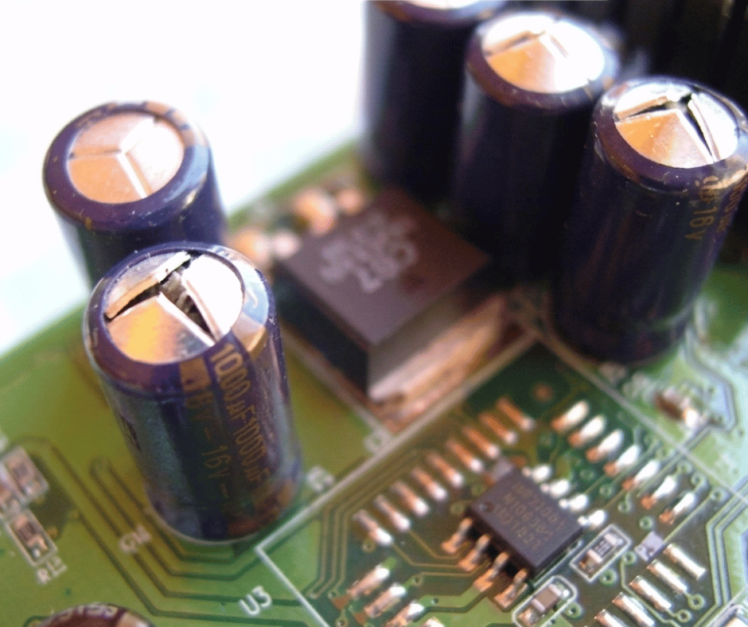

Pourquoi vos appareils électroniques tombent en panne après une coupure de courant au Togo ?
Téléviseurs, décodeurs, amplis... découvrez le vrai responsable (spoiler : c'est le retour du courant) et comment réparer à moindre coût.
Au Togo, les coupures de courant sont fréquentes. Beaucoup d'appareils cessent de fonctionner juste après un retour d'électricité. Ce n'est pas la coupure qui détruit vos appareils… c'est le retour du courant. Dans cet article, vous allez comprendre les vraies causes, les composants les plus touchés, et comment éviter/réparer.
Quand l'électricité est coupée, vos appareils s'éteignent brutalement. Rien de grave jusque-là. Le vrai danger arrive au moment où le courant revient. À cet instant : surtension brutale, courant instable, pic électrique violent. Ces phénomènes sont extrêmement dangereux pour les circuits électroniques.
Les condensateurs électrolytiques stockent l'énergie, stabilisent la tension et protègent les circuits. Mais au Togo, à cause des coupures fréquentes, ils s'usent beaucoup plus vite : ils gonflent, fuient et finissent par lâcher.

👉 Dans 70 à 90% des cas, ce sont les condensateurs qui sont en cause.
À Lomé et dans plusieurs zones : coupures répétées (CEET), groupes électrogènes mal stabilisés, absence de régulateurs de tension, réseaux instables. Résultat : vos appareils prennent des “chocs électriques” réguliers.
Oui, dans la majorité des cas. Un appareil “mort” n'est pas forcément irréparable. Souvent, il suffit de remplacer quelques composants, et dans la majorité des pannes, le remplacement des condensateurs suffit.
Utiliser des composants de mauvaise qualité = panne qui revient rapidement. Pour une réparation durable, il faut des condensateurs de bonne qualité, adaptés aux appareils modernes, résistants aux variations de tension.
Voir notre catalogueLivraison rapide Lomé → Kara → Mango → et partout au Togo
Au Togo, les coupures sont inévitables… mais les pannes ne le sont pas. Le vrai problème vient des surtensions au retour du courant, et les condensateurs sont les premiers touchés. La bonne nouvelle : ces pannes sont souvent simples et peu coûteuses à réparer.